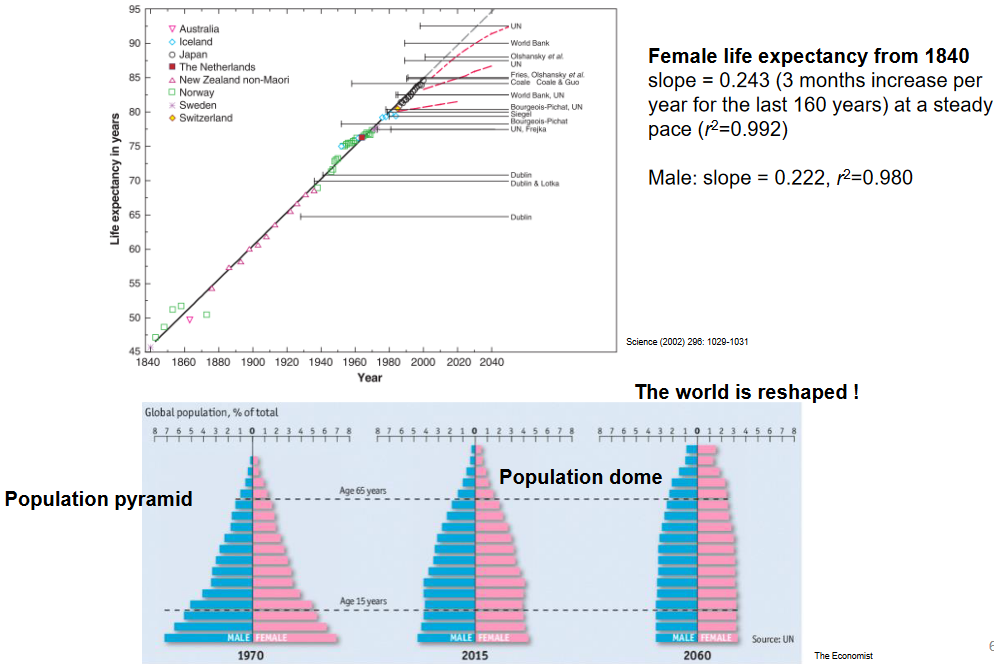
1 Aging and Neurodegeneration
The average human life expectancy has dramatically risen since the 1940s. The above figure suggests that there has been a three-month increase in the life expectancy for women per year for the past 160 years of history. A similar argument could also be said for men given the high \(R^2\) values (which describes how well a trend is being explained).
Nevertheless, the above trends have also altered the way that the world’s population pyramid is being shaped. Whereas the said curve looked more like a pyramid in the past, it is now starting to look more uniform (i.e., like a bottle).
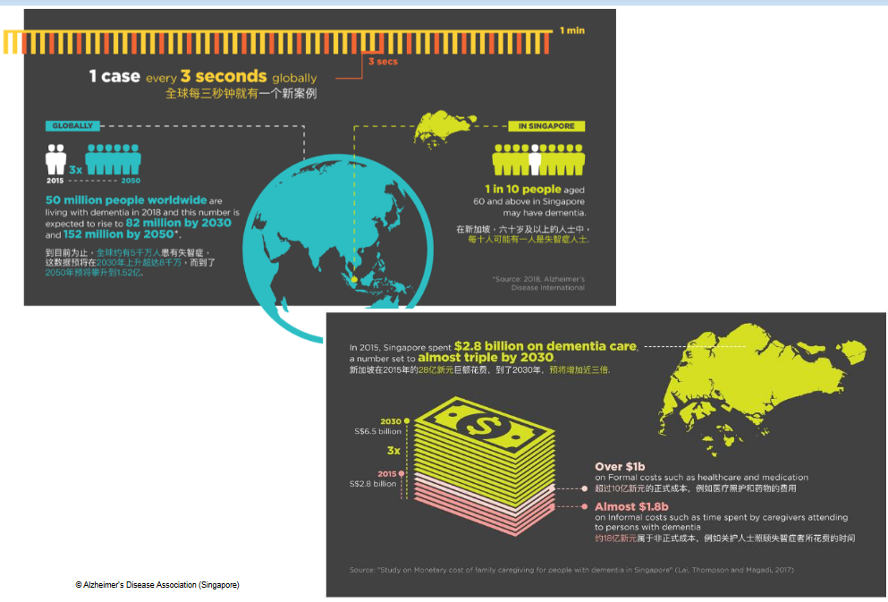
In Singapore at least, at least 14.4% of Singaporeans are above 65 years old. This figure is expected to grow to about 28% by 2030 and to about 47% in 2050. With so many aging Singaporeans in the future, it’s not unrealistic to think that the government will soon start spending big bucks on healthcare-related expenses.
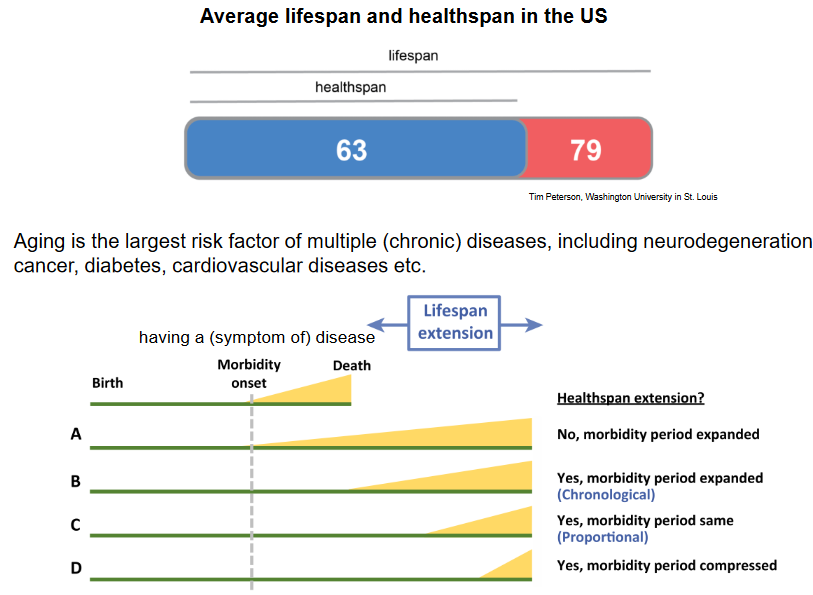
This course is relevant as aging is the biggest risk factor of multiple (chronic) diseases - including neurodegenerative ones like Alzheimer’s, cancer, diabetes, cardiovascular diseases, and much more.
A healthspan is the number of years that a person in good health lives for. This metric is used to measure somebody’s quality of life as they age. A lifespan - on the contrary - refers to the number of years that a person lives from the time that they are born to the time that they die. In other terms, a lifespan is just how long somebody lives for - this metric is often used in demographic studies and life expectancy tables.
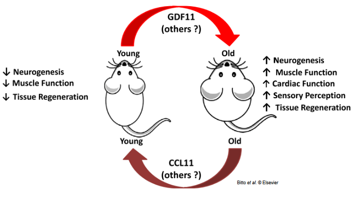
Rejuvenation is the idea that neurons and neural circuits (i.e., a bunch of neurons that are connected via synapses or gaps) can be restored via intervening, if not slowing down age-related degeneration processes and promoting neural cell regeneration.
The above graphic also depicts parabiosis: this is a surgical technique whereby the circulatory systems of two living animals are joined in such a way that they can exchange blood along with other proteins. In this example, parabiosis between a young and an old mouse is suggested to improve neural tissue regeneration, muscle function, cardiac function, and other bodily regulations in the old mouse, but have the reverse effect in the young mouse.
1.1 Hallmarks of Aging
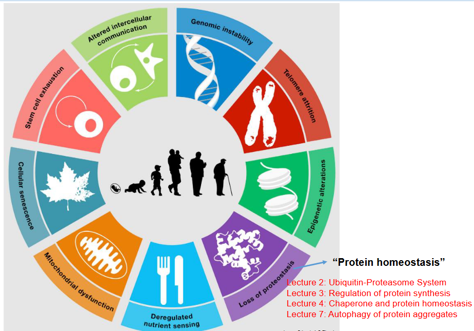
The above nine hallmarks or causes of aging will be explained upon in a future lesson. This week’s lecture only aims to provide a brief overview.
1.1.1 Loss of Proteostasis
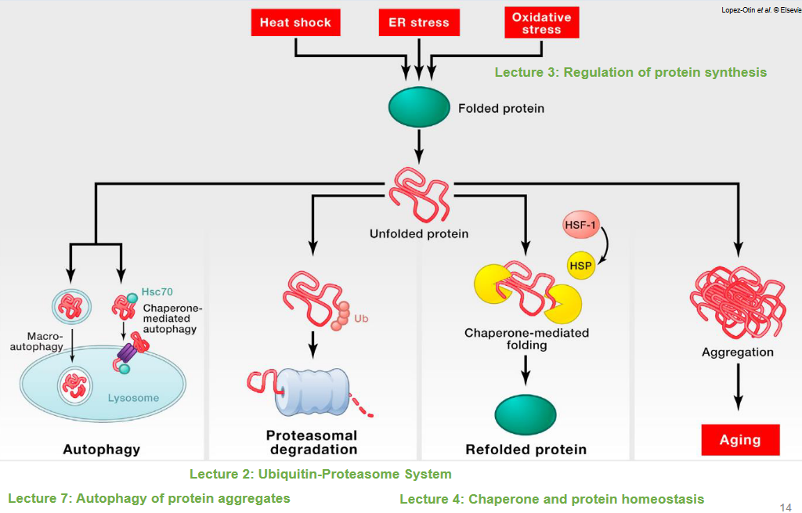
In any living organism, outside or inside stressors such as heat, free radicals, something from the mitochondria may cause a normally-folded protein to unfold. The body typically has one of many ways to deal with the unfolded protein:
- Autophagy: the unfolded protein is uptaken by the lysosomes via an endosome (i.e., a container) or via means of a protein called Hsc70: a chaperone.
- Degradation: the unfolded protein could be ubiquinated and subsequently targeted for degradation by the ubiquitin-proteasome system.
- Refolding: the protein could just get refolded with the help of chaperone proteins.
However, in the event that the cell is unable to perform any one of the above three functions, these unfolded proteins could aggregate and form plaques or tangles, hence leading to aging-related illnesses.
1.1.2 Free Radical Theory of Aging
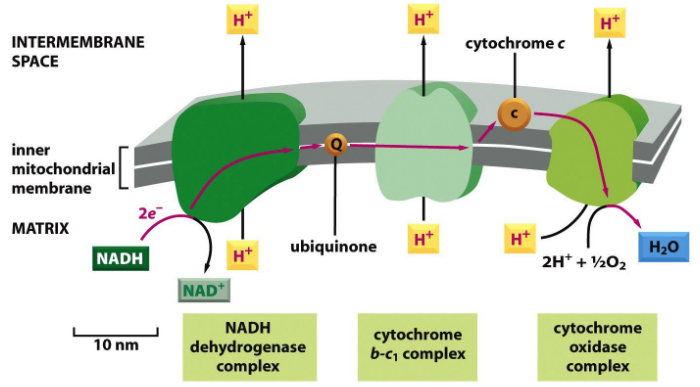
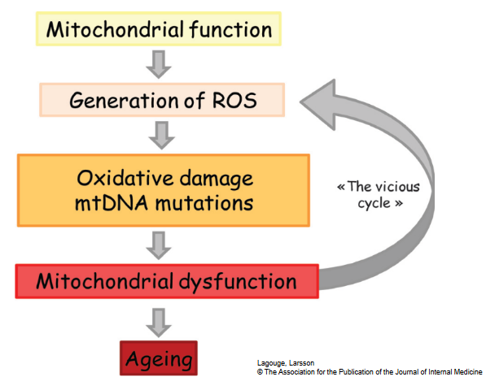
The free radical theory of aging suggests that the process of aging is partly caused by the damage that free radicals can inflict on our cells over time. Free radicals are unstable molecules that can harm our cells by causing oxidative stress, which can lead to various age-related diseases and the overall decline of our bodies as we get older.
In the late 1960s, scientists discovered an enzyme called superoxide dismutase (SOD). This enzyme plays a crucial role in our bodies by helping to neutralize free radicals and reduce the damage they can cause to our cells.
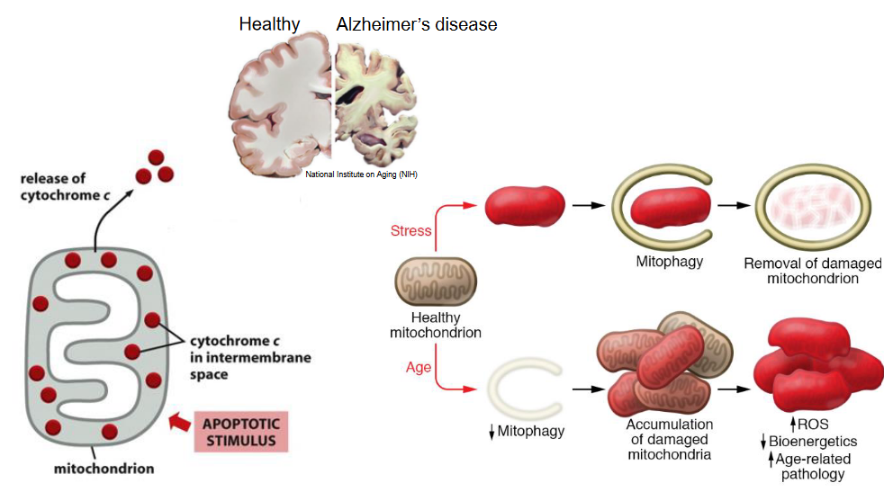
Nonetheless, when mitochondria age, a process called mitophagy occurs that engulfs damage mitochondria and remove them by degrading them. However, when an organism ages, mitophagy isn’t able to occur as readily and so, the damaged mitochondria accumulate and lead to the creation of reactive oxygen species (i.e., ROS) and age-related issues.
1.1.3 Cell Senesence
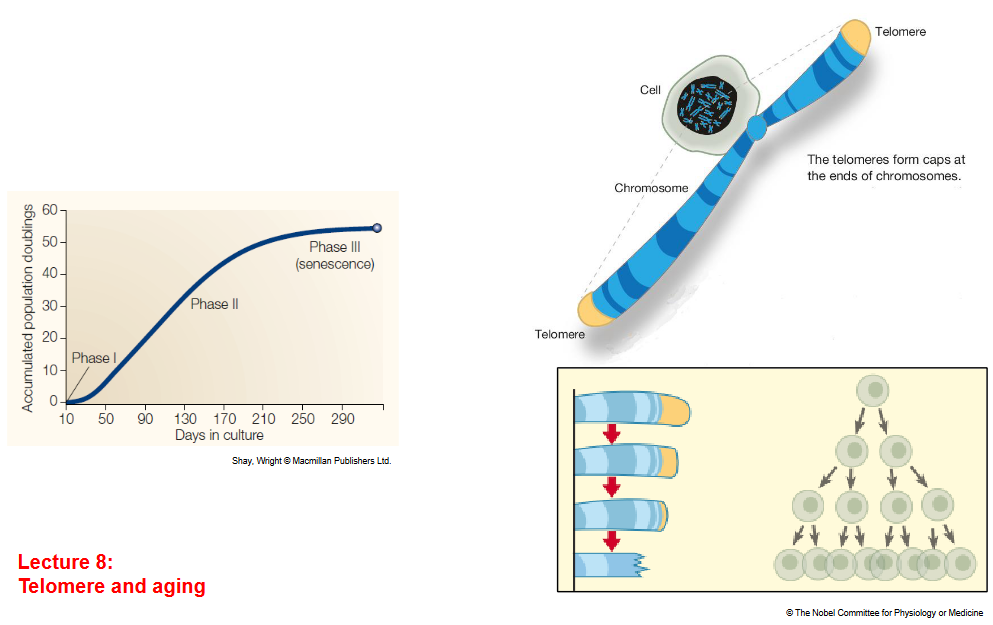
Whenever a cell divides, the ends of its chromosomes (i.e., its telomeres) shorten a little. These chromosomes are unable to be shortened past a certain point - because of this, cells can only divide so many times (which is shown by that graph on the left).
1.1.4 Epigenetics
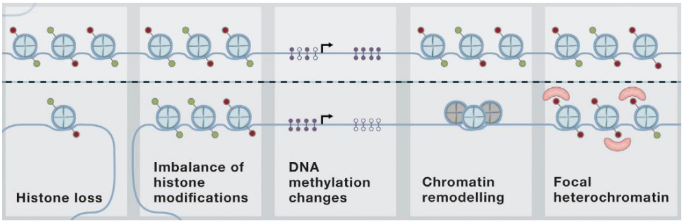
The above figure shows some processes that occur on the epigenetic-level that may contribute to aging-related health issues.
1.2 Possible Interventions to Expand Healthcare
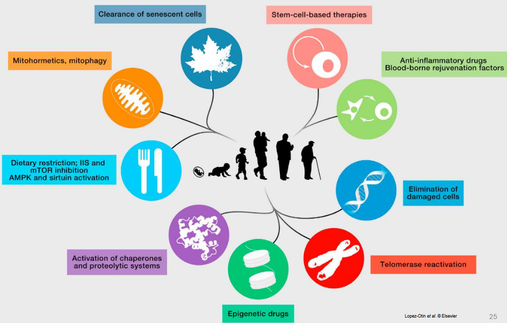
All of the above will be explained in subsequent lectures.